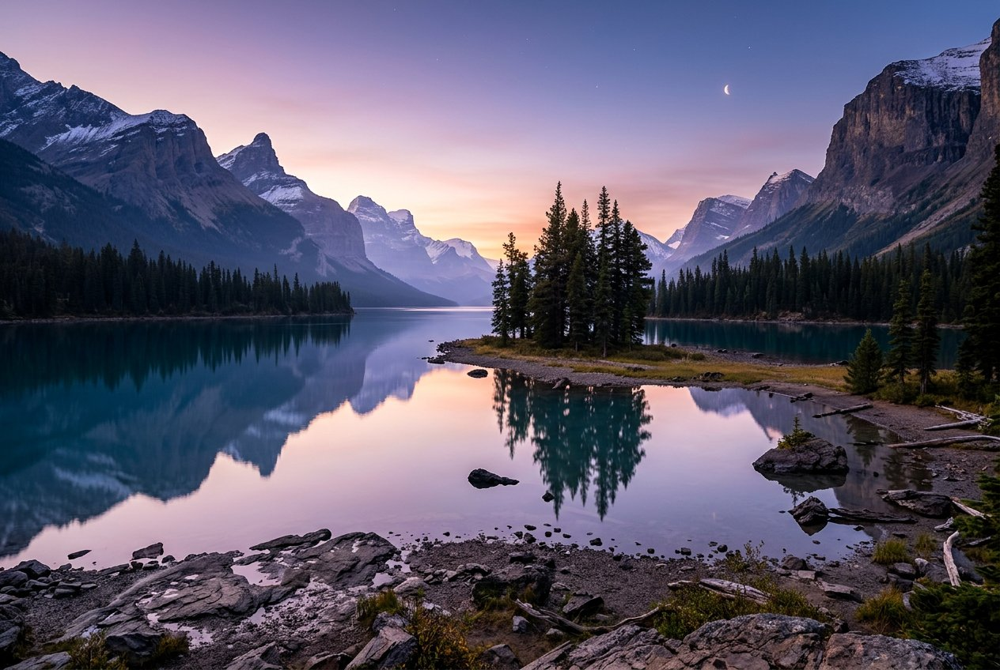

สีที่ใช่ บรรยากาศที่ชอบ
ปรับแสง คอนทราสต์ โทนอุ่น–เย็น และอีก 40 พรีเซ็ต พร้อมปรับความแรงได้เสมอ
แต่งทุกช่วงเวลาให้เป็นมากกว่าเดิม ด้วยฟิลเตอร์ สไตล์ และเครื่องมือครบครัน
ฟรี ไม่มีลายน้ำ และรูปของคุณไม่เคยออกจากเครื่อง

ก่อนหลัง · Nebula Tintเลือกบรรยากาศที่ใช่ แล้วปรับให้เป็นคุณอีกนิด
ภาพตัวอย่างสร้างในเครื่อง · สีสันเปลี่ยนได้ ความทรงจำยังเหมือนเดิม
ไม่ต้องเป็นมือโปร ก็สร้างภาพในแบบที่อยากให้เป็นได้
ปรับแสง คอนทราสต์ โทนอุ่น–เย็น และอีก 40 พรีเซ็ต พร้อมปรับความแรงได้เสมอ
ครอป หมุน กลับด้าน และกำหนดขนาดเอง จะโพสต์ สตอรี หรือวอลเปเปอร์ก็เอาอยู่
ข้อความ สติ๊กเกอร์ กรอบฟิล์ม และปากกาวาดอิสระ เพิ่มเกรน แสงรั่ว หรือละอองดาวได้อีก
เราเชื่อว่าการแต่งรูปไม่ควรแลกมาด้วยความเป็นส่วนตัว รูปทั้งหมดถูกประมวลผลในเบราว์เซอร์ของคุณ ไม่มีการอัปโหลดหรือเก็บประวัติงาน
เลือกไฟล์ ลากมาวาง หรือวางจากคลิปบอร์ด
ปรับแต่งทุกอย่างตามใจ ไม่มีสูตรตายตัว
JPG, PNG หรือ WebP ไม่มีลายน้ำแน่นอน
ทุกเครื่องมือและทุกพรีเซ็ตบน PhotoEdit ใช้ฟรี ไม่มีแพ็กเกจพรีเมียม ไม่มีลายน้ำ และไม่ต้องสมัครสมาชิก
รูปอยู่ในหน่วยความจำของเบราว์เซอร์ระหว่างใช้งานเท่านั้น ไม่ถูกส่งเข้าเซิร์ฟเวอร์และไม่เก็บในฐานข้อมูล เมื่อปิดหรือรีเฟรชหน้า งานที่ยังไม่ได้ดาวน์โหลดจะหายไป จึงควรดาวน์โหลดก่อนออก
รองรับ JPG, PNG และ WebP ขนาดไฟล์ไม่เกิน 30 MB ความละเอียดต้นฉบับไม่เกิน 32 ล้านพิกเซล และด้านยาวไม่เกิน 16,384 px ส่งออกได้ไม่เกิน 24 ล้านพิกเซลและด้านยาว 8,192 px ส่วน HEIC และ GIF ให้แปลงเป็น JPG หรือ PNG ก่อน ความสามารถถอดรหัสขึ้นกับเบราว์เซอร์ด้วย
ใช้ได้ทั้งคอมพิวเตอร์ แท็บเล็ต และมือถือผ่านเบราว์เซอร์สมัยใหม่ ไม่ต้องติดตั้งแอป การใช้งานครั้งแรกต้องเชื่อมต่ออินเทอร์เน็ตเพื่อโหลดหน้าเว็บ หลังจากโหลดแล้วการแต่งรูปทั้งหมดทำงานในเครื่อง
การขยายเพิ่มจำนวนพิกเซล แต่ไม่ได้สร้างรายละเอียดที่หายไปจากรูปต้นฉบับ PhotoEdit ไม่มี AI เพิ่มความละเอียด และแนะนำใช้ขนาดใกล้เคียงต้นฉบับเพื่อคุณภาพที่ดีที่สุด
ไม่ต้องสมัคร ไม่เก็บรูป ไม่มีลายน้ำ